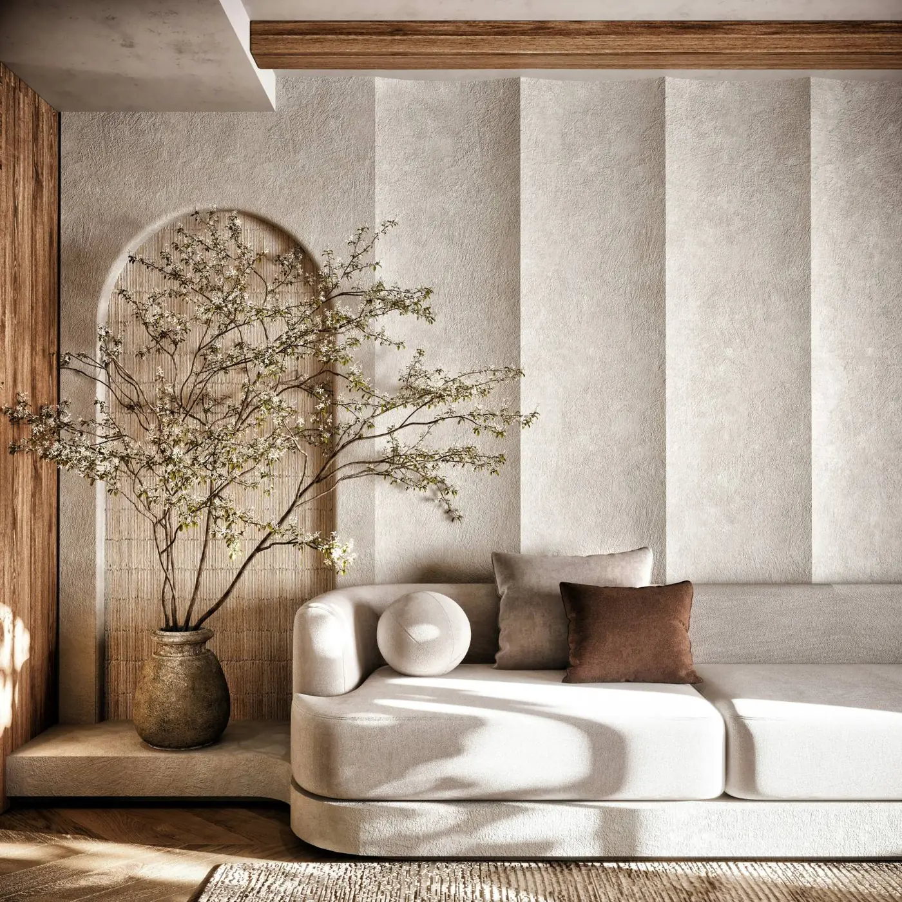
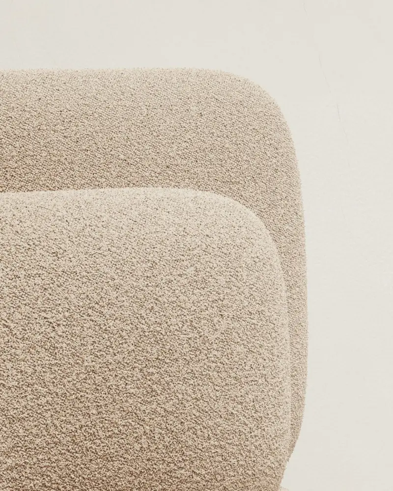
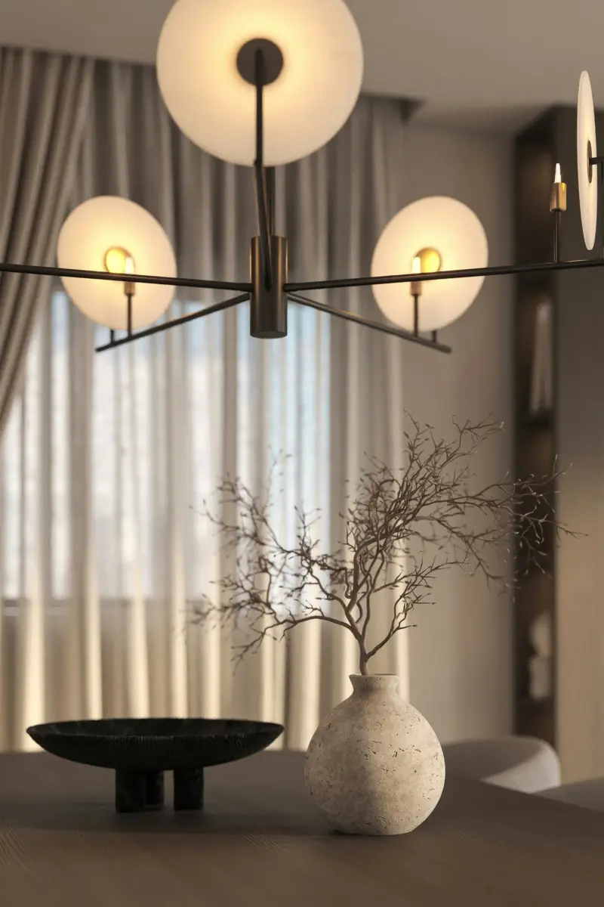
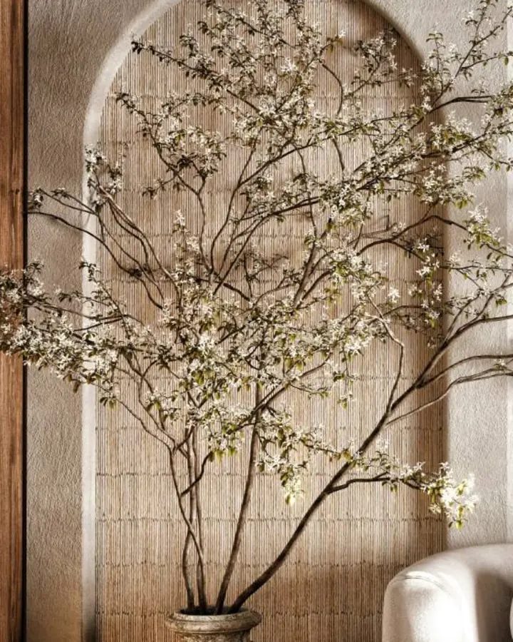
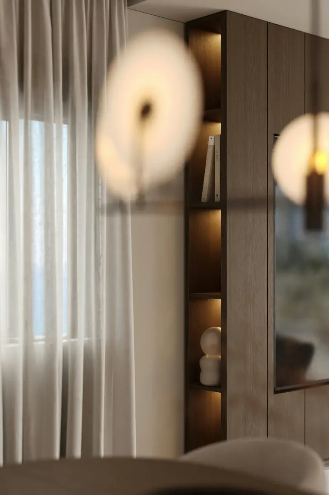
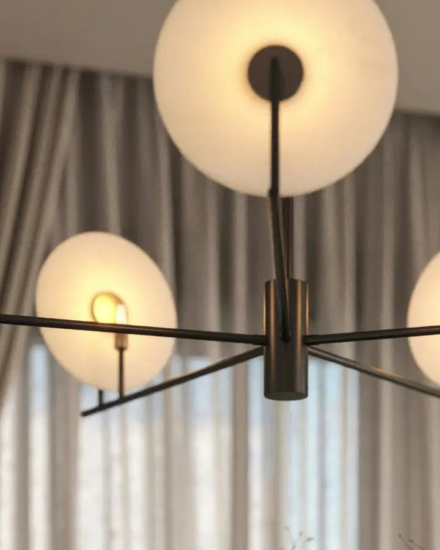
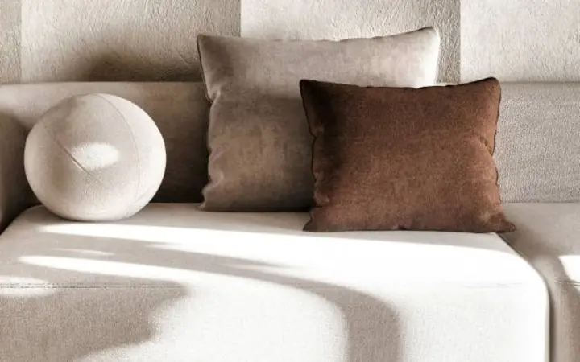
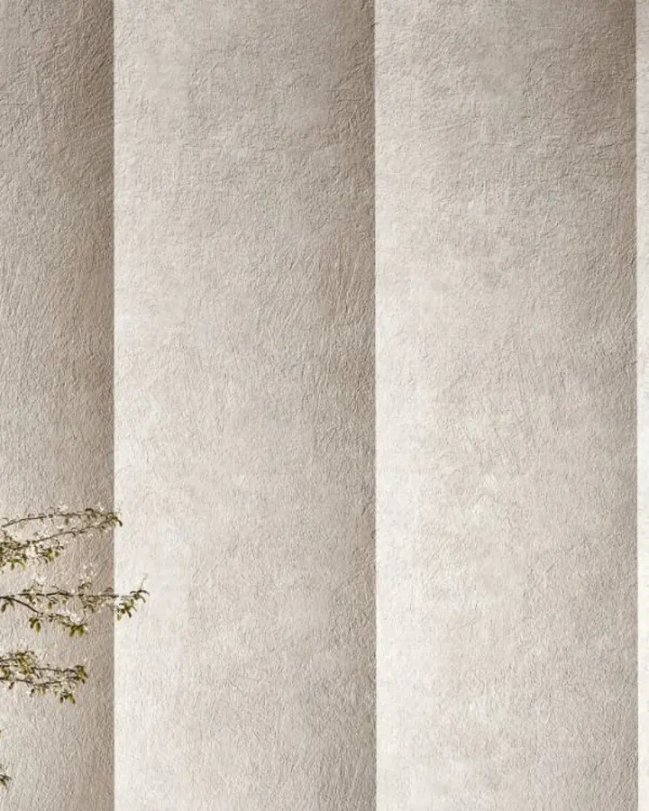
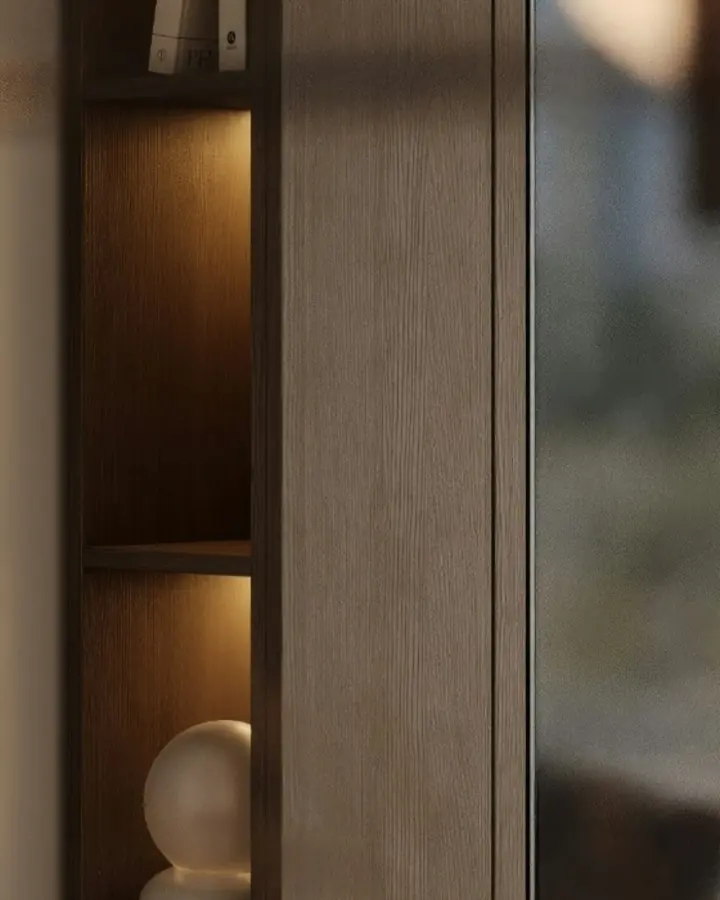
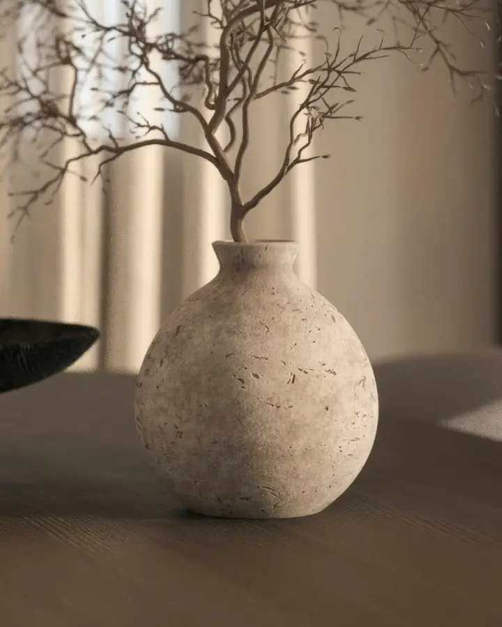

Japandi interiors · London & Kyoto
Rooms that
breathe.
We design private residences around light, natural material and the space between things — so a home feels unhurried every time you return to it.
Arrange a private consultation
Philosophy
In Japanese, ma is the pause that gives a thing its meaning. We begin every home there — with what to leave out.
Our work sits where Japanese restraint meets Scandinavian warmth. Rooms are composed slowly, like a page of print: a few considered pieces, generous margins, and materials honest enough to age alongside the people who live with them.
We take on a small number of commissions each year so that every decision — the grain of a door, the fall of afternoon light across a wall — receives our full attention.
- 間 Ma
- Space as a material. Emptiness that is designed, not left over.
- 簡素 Kanso
- Simplicity earned by removing everything that does not serve the room.
- 侘寂 Wabi-sabi
- Beauty in texture, imperfection and the patina of time.
The practice

From first conversation to the last placed object.
Every commission is led personally by our founding designers and delivered with a trusted circle of joiners, plasterers and makers in Britain and Japan.
-
i.
Full residence design
Complete interiors for townhouses, country homes and apartments — spatial planning, lighting, joinery, furniture and art, composed as a single quiet whole.
-
ii.
Considered renovation
Architectural interventions that respect the bones of a building: lime plaster, timber screens, deep window reveals and storage that disappears.
-
iii.
Bespoke furniture & objects
Pieces made for a single room — tables, seating, lighting and ceramics — drawn in the studio and crafted by hand.
Selected rooms


Each room is photographed as it is lived in — never styled for a single afternoon.


Process
Four unhurried movements, typically across nine to eighteen months.
-
01
Listening
Time at your home and in conversation, learning how you live, rest and gather.
-
02
Composition
Plans, material boards and hand drawings that hold the whole home in balance.
-
03
Making
Our makers build, plaster and finish on site while we oversee every detail.
-
04
Living
We place the final objects, then return each season as the house settles.
Client words
“They removed more than they added, and somehow the house became generous. It is the first place we have lived that feels completely still.”

“Every material was explained to us — where it came from, how it would age. Two years on, the rooms are more beautiful than the day we moved in.”
“Calm, precise and entirely without fuss. They protected our time as carefully as the design.”
Materials
A short vocabulary, chosen to be touched.
We work with fewer than a dozen materials, each sourced from people we know by name.
-

Lime plaster
Somerset & Awaji Island
Hand-trowelled in thin layers; breathes, softens sound and catches low light.
-

Smoked walnut
Felled sustainably in the Loire
Oiled, never lacquered, so the grain deepens with every year of use.
-

Unfilled travertine
Quarried in Tivoli
Its natural pores are left open — quiet evidence of water and time.
-
Washed linen
Woven in Flanders
Unbleached and stone-washed, for curtains that filter light rather than block it.
Begin
A private consultation.
Share a little about your home and we will reply personally within two working days to arrange a first meeting — at your residence, our Marylebone studio, or by video.
Now accepting commissions for spring 2027.
Or write directly to studio@atelier-ma.example